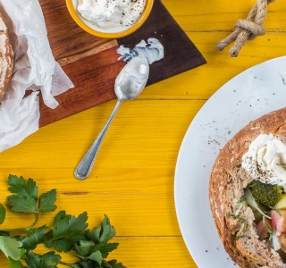

Tüften un Plum

Zutaten:
- 1 Zwiebel
- 400 g Kartoffeln
- 2 Stange(n) Porree
- 300 g Weißkohl
- 250 g Brokkoli
- 2 Speisemöhren
- 1 EL Butterschmalz
- 800 ml Gemüsebrühe
- 1 Lorbeerblatt
- Salz
- Pfeffer
- 4 Mettenden
- 4 Zwetschgen
- 150 g Schmand
- 1 Bund Petersilie
- 4 “Suppenbrötchen”
Ran an den Herd!
- Zwiebel schälen, würfeln. Kartoffeln schälen und in Würfel schneiden. Porree putzen, waschen und in Ringe schneiden. Weißkohl putzen, waschen und in feine Streifen schneiden. Brokkoli putzen, waschen und in kleine Röschen trennen. Möhren schälen, in Scheiben schneiden (nicht schräg).
- Butterschmalz in einem großen Topf erhitzen. Zwiebel darin glasig dünsten. Vorbereitetes Gemüse zugeben und mit andünsten. Mit Brühe ablöschen. Lorbeerblatt zugeben, mit Salz und Pfeffer würzen.
- Mettenden in Stücke schneiden. Zwetschgen waschen, halbieren, entsteinen und die Zwetschgen in Stücke schneiden. Mettenden und Zwetschgen zur Suppe geben und alles ca. 20 Minuten köcheln lassen.
- In der Zwischenzeit Petersilie waschen, trocken schütteln und hacken. Brot aushöhlen. Suppe erneut abschmecken, Petersilie untermischen. Suppe in Brötchen anrichten und mit Schmand garnieren.